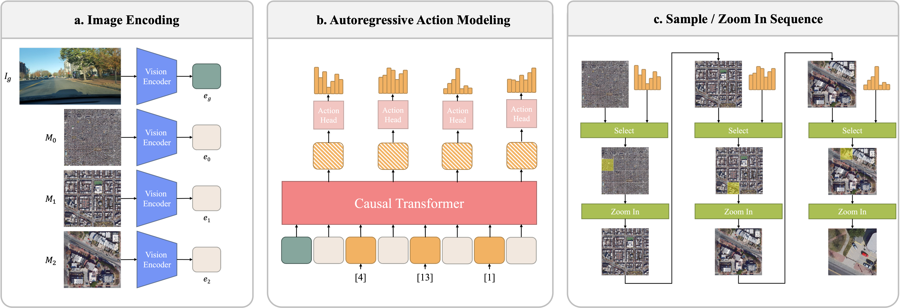
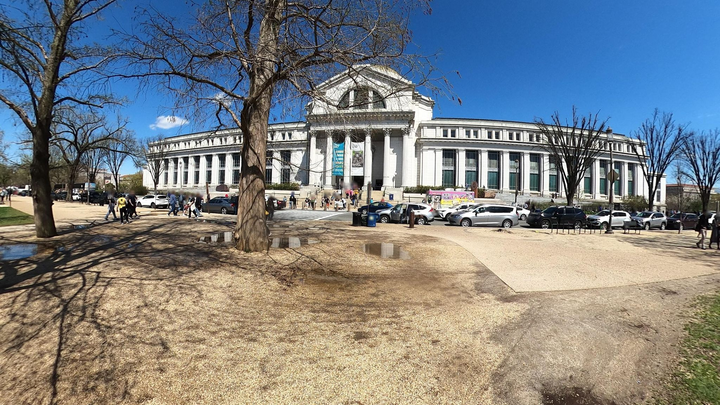
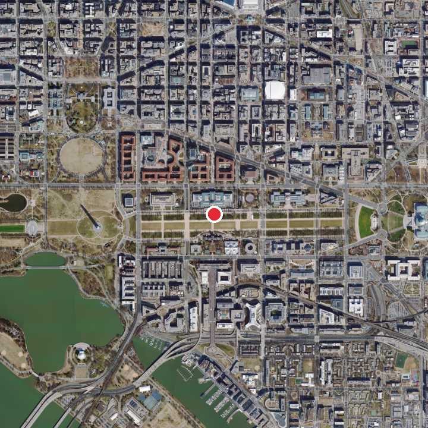
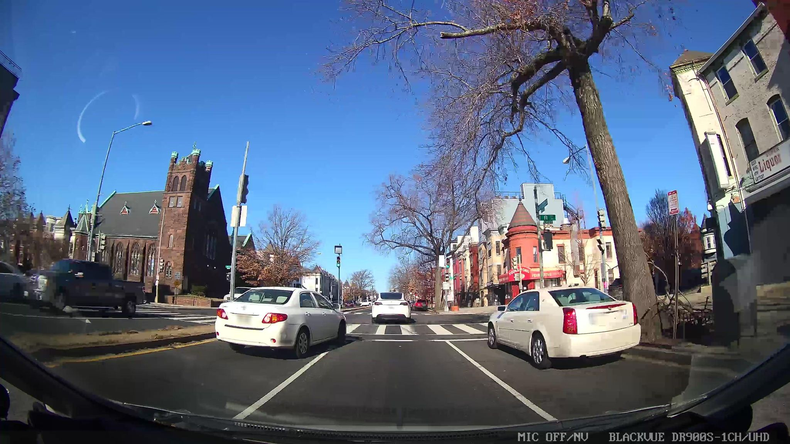

Just Zoom In
Cross-View Geo-Localization via Autoregressive Zooming
Photogrammetric Computer Vision Lab, The Ohio State University
Abstract
Cross-view geo-localization estimates a camera’s location by matching a street-view image to geo-referenced overhead imagery. Existing approaches usually treat this as contrastive image retrieval over a dense satellite database. That formulation can depend on large batches, hard negative mining, and exhaustive nearest-neighbor search, while also ignoring the geographic hierarchy of the map.
Just Zoom In reformulates cross-view geo-localization as autoregressive zooming. Starting from a coarse satellite view, the model predicts a short sequence of zoom actions until it selects a terminal overhead cell. This enables coarse-to-fine spatial reasoning without contrastive losses or hard negative mining.
Method
The model uses a shared DINOv2 vision encoder for street-view and satellite imagery. A causal transformer decoder then predicts the next zoom action conditioned on the ground query, previous decisions, and the current satellite context.
Each action chooses one of the child cells in a fixed grid. After several steps, the final selected cell becomes the location estimate.
- 1Encode query Street-view image features condition the search.
- 2Choose cell The decoder predicts the next satellite grid cell.
- 3Zoom again The selected cell becomes the next map context.
- 4Localize The terminal cell gives the final position estimate.

Zoom-in localization demo
The model replaces flat contrastive retrieval with a sequence of zoom-in decisions over a multi-scale overhead map. Each satellite frame below is centered on the ground-truth location, showing the same place at progressively finer spatial context.

Street-view query

Coarse satellite context centered on the ground-truth location.
Street-view examples
Representative full-resolution street-view samples from the benchmark show the diversity of viewpoints, road geometry, occlusions, lighting, and urban context.

Results
On the proposed benchmark, Just Zoom In improves distance-based Recall@1 while avoiding hard negative mining. Compared with Sample4Geo, the strongest contrastive baseline shown here, Ours improves R@50m by +5.50% and R@100m by +9.63%.
| Method | R@40m ↑ | R@50m ↑ | R@100m ↑ |
|---|---|---|---|
| SAIG-D | 39.36 | 47.52 | 64.17 |
| TransGeo | 45.97 | 54.55 | 67.61 |
| Sample4Geo | 52.85 | 60.81 | 71.30 |
| Ours | 55.74 | 66.31 | 80.93 |
Citation
@article{erzurumlu2026justzoomin,
title = {Just Zoom In: Cross-View Geo-Localization via Autoregressive Zooming},
author = {Erzurumlu, Yunus Talha and Kwag, Jiyong and Yilmaz, Alper},
journal = {arXiv preprint arXiv:2603.25686},
year = {2026}
}